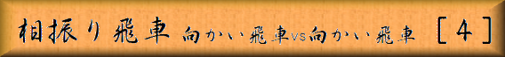

「図１」までの手順
▲７六歩 ▽３四歩 ▲６六歩 ▽３三角 ▲６八銀 ▽２二飛
▲６七銀 ▽２四歩 ▲７七角 ▽４二銀 ▲８八飛 ▽２五歩
▲３八金 ▽２六歩 ▲同 歩 ▽同 飛 ▲２七歩 ▽２四飛
▲７五歩 ▽６二玉 ▲８六歩 ▽７二玉 ▲８五歩 ▽３五歩
 |
|
||||
|
本章では先手側が玉を左側に持って行く、居飛車の右玉と同様の戦型を御紹介します。 「図１」までの手順 ▲７六歩 ▽３四歩 ▲６六歩 ▽３三角 ▲６八銀 ▽２二飛 ▲６七銀 ▽２四歩 ▲７七角 ▽４二銀 ▲８八飛 ▽２五歩 ▲３八金 ▽２六歩 ▲同 歩 ▽同 飛 ▲２七歩 ▽２四飛 ▲７五歩 ▽６二玉 ▲８六歩 ▽７二玉 ▲８五歩 ▽３五歩 | |||||
| Figure 1
|
後手が▽２五歩を保留した場合は▲８八飛と先に振る事が出来ますが、 前章の「図４」のような展開ではつまりません。 そこで右翼の守備を簡単に構えて変化する手段が有るのです。 「図１」から「図２」までの手順 ▲７八金 ▽５二金左 ▲７六銀 ▽８二銀 ▲６七金 ▽３四飛 ▲４八銀 ▽３六歩 ▲同 歩 ▽同 飛 ▲３七歩 ▽３四飛 ▲５六歩 ▽６二金上 ▲９六歩 ▽９四歩 ▲６八角 ▽１四歩 ▲７七桂 ▽１五歩 ▲８九飛 ▽５四歩 ▲６九玉 ▽５三銀 ▲７八玉 |
|||
| Figure 2
|
▲７六銀から▲６七金と盛り上がり玉を左側に持って行くのです。 これが意外に有力で後手側から攻略し難い形なのです。 |
|||
| Figure 3
|
「図３」は前章「図１」と同一局面、後手が▽７四歩と早目に突き、 先手に▲７五歩と突かれるのを防いだ所です。 「図３」から「図４」までの手順 ▲４六歩 ▽８二銀 ▲４七銀 ▽７三銀 ▲３六歩 ▽２五歩 ▲３八金 ▽６二玉 ▲３七桂 ▽４四歩 ▲５八金 ▽７二金 ▲２九飛 ▽７一玉 ▲６八玉 ▽８二玉 ▲９六歩 ▽９四歩 ▲１六歩 ▽１四歩 ▲７八玉 ▽４三銀 ▲６八角 ▽５二金 ▲５六歩 ▽６四歩 ▲７七桂 ▽６三金左 ▲５七角 |
|||
| Figure 4
|
「図４」の局面を見て、気づかれた方も多いと思いますが、先手の布陣は６５、６６章で御紹介した風車或いは新風車に似た物となっています。 これは後手が▽２五歩と早目に決めて来た場合でも採用出来る戦型です。 以上で相振り飛車編を終了しますが、この戦型は相居飛車を逆にしただけに思えますが、 今まで御紹介した居飛車戦型のどれとも違う事を分かって頂けたでしょうか。 それを感じて貰う為に本戦型をセカンドステップとしました。 この戦型はプロ間でも実戦例が少なくこれからも新型が生まれる事と思います。 |
|||

|
||||